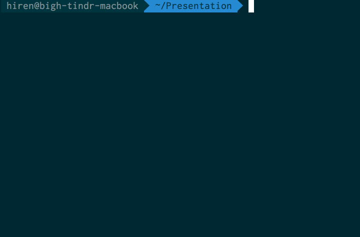
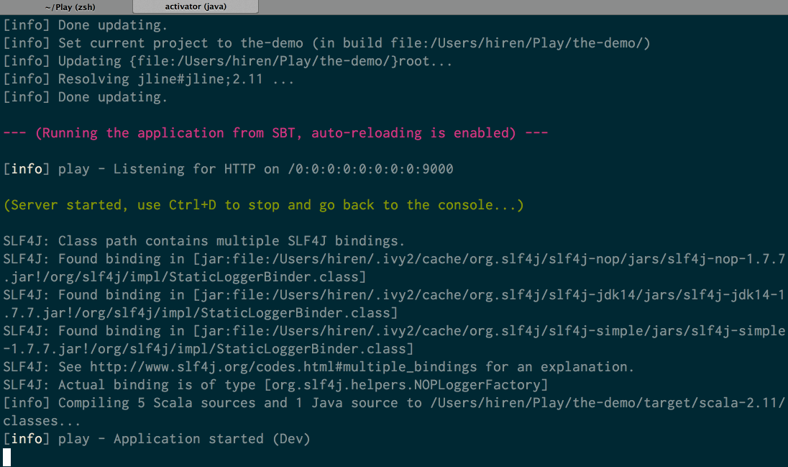
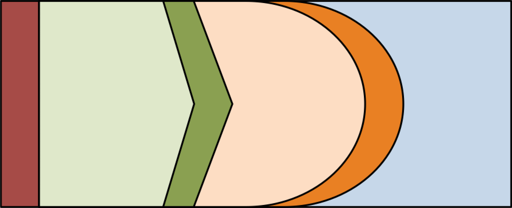

object Ugly
this.code = Ugly
//can you see this??
Hiren Hiranandani
github: @bigH
twitter: @hhiranan


"Scala Guy"
- Do it in Scala!
- Awesome Libraries
- Awesome Frameworks
- Evolving Language
- Reactive == Win
- Typesafe Certified Training
- Custom Scala Training
- Code-Review
- Mentoring
- Development
Play Framework
Constructs:
Func-tastic ways of Slicing & Dicing Play
by Hiren Hiranandani
Poll
What is Play Framework?
(read) Quick History Lesson
... emphasis on Quick
Web Frameworks
- Rails
- Django
- Spring MVC
Then Came Scala
.. and Lift
- Novel in Many Ways
- Painful in Many Ways
- Mini-Frameworking
- Focus on Community was Lacking
Play Grows Up
- Nice Mix of FP & OO
- Plays Nice with other Technology
- Blend of the Best
- MVC Capable
- Solid Templates
- Great Type-Safety
- Great JSON Support
- Incremental Compilation
- Async from the Bottom-Up
- Leveraging Scala the Right Way!
Quick Tour of Play
Get Started
- Download Activator
- Unzip and add to
PATH - Run
activator new
Creating a New App
App Complete!
Live Coding
Components
Routing
GET /search/:term SearchController.search(term: String)
Components
Controller
def search(term: String) = Action {
val results = performSearch(term)
Ok(views.search.results(results))
}
... with Futures:
def search(term: String) = Action {
val results = Future { performSearch(term) }
results map (Ok(views.search results _))
}
Components
Views
@(results: List[SearchResult])
Found @results.size results
@if(!results.isEmpty) {
@for(result <- results) {
-
@result.summary
}
}
Out of the Box You Get...
- Fully Configured Build
- Fully Functioning Scala Project
- Comes with Tests
- Comes with Tools
- IntelliJ: 'activator idea'
- Eclipse: 'activator eclipse'
Play == Win
The M-word
Well Known Monads

Explaining Monads
- Managing Computation
- Well-Defined Semantics
- Well-Defined Interface(s)
Well Known Monads
Option[T]
val father = if (person == null) null else person.father
val mother = if (father == null) null else father.mother
val sister = if (mother == null) null else mother.sister
for {
father <- person.father
mother <- father.mother
sister <- mother.sister
} yield sister
Well Known Monads
Try[T]
def tryReadInt(prompt: String) = Try(readLine(prompt)) map (_.toInt)
def divide: Try[Int] = {
val problem = for {
numerator <- tryReadInt("Enter Numerator:\n")
denominator <- tryReadInt("Enter Denominator:\n")
} yield (numerator / denominator)
problem orElse {
println("Y U NO Make Sense! Try again.")
divide
}
}
Well Known Monads
Future[T]
def getUser(id: String): Future[User]
def getCart(user: User): Future[Cart]
def getFriends(user: User): Future[List[User]]
def getAffiliations(user: User): Future[List[Affiliation]]
for {
user <- getUser(id)
futureCart = getCart(user)
futureFriends = getFriends(user)
futureAffiliations = getAffiliations(user)
cart <- futureCart
friends <- futureFriends
affiliations <- futureAffiliations
} yield Response(...)
The Functions You See
Controllers == Functions
By Default...
def search(term: String) = Action {
val results = performSearch(term)
Ok(views.search.results(results))
}
Composition
trait FunctionalController {
def builder: ActionBuilder
def failureView(ex: Throwable): Html
def action[A](logic: => A,
renderer: A => Html,
failure: Throwable => Html = failureView) = builder {
Try(logic) map renderer match {
case Success(view) => Ok(view)
case Failure(ex) => Error(failure(ex))
}
}
}
Composition
class SearchController extends FunctionalController {
def Builder = MySpecialAction
def failureView = views.search.failed
def search(term: String) = action (
logic = performSearch(term),
renderer = views.search.results
)
}
The Functions You See
Views == Functions
Layouts
trait FunctionalController {
def layout: Html => Html
def action[A](logic: => A,
renderer: A => Html,
failure: ...) = builder {
Try(logic) map (renderer andThen layout) match {
case Success(view) => Ok(view)
case Failure(ex) => Error(failure(ex))
}
}
}
Bigger Layouts
type Layout = Html => Html
def composeLayout(views: Map[String, Future[Html]],
layout: Map[String, Html] => Layout): Future[Layout] = {
val listOfFutureTuples = views map {
case (name, fHtml) => fHtml map ((name, _))
}
Future sequence listOfFutureTuples map (_.toMap) map layout
}
Bigger Layouts
type Layout = Html => Html
def widgets: Map[String, Future[Html]]
def layout(view: A => Html): Future[A => Html] = {
for {
layout <- composeLayout(widgets, views.layouts.default)
} yield {
(a: A) => layout(view(a))
}
}
def search(term: String) = action (
logic = performSearch(term),
renderer = layout
)
Service as a Function
REST with Functional Style
Credit goes to @marius
Some Definitions
type Service[In, Out] = (In => Future[Out])
type Map[A, B, In, Out] =
(A, Service[In, Out]) => Future[B]
type Filter[In, Out] = Map[In, Out, In, Out]
Mental Model
Composition
type Map[A, B, In, Out] =
(A, Service[In, Out]) => Future[B]
val map: Map[A, B, In, Out] = _
val inner: Service[In, Out] = _
val outer: Service[A, B] = map(_, inner)
Usage: Timer
type Filter[In, Out] = (In, Service[In, Out]) => Future[Out]
class Timer[A, B](name: String) extends Filter[A, B] {
def now = System.currentTimeMillis
def apply(a: A, service: Service[A, B]): Future[B] = {
val start = now
val result = service(a)
result foreach {
_ => recordTime(name, now - start)
}
result
}
}
Usage: AwesomeFilter
type Filter[In, Out] = (In, Service[In, Out]) => Future[Out]
val filter: Filter[In, Out] = _
val inner: Service[In, Out] = _
val outer: Service[In, Out] = filter(_, inner)
class AwesomeFilter[A, B](name: String,
defaults: List[Filter[A, B]])
extends Filter[A, B] {
var filters = defaults
def addFilter(filter: Filter[A, B]) { ... }
def apply(a: A, service: Service[A, B]): Future[B] = {
filters.foldRight(service)((filter, acc) => filter(_, acc))
}
}
Application as a Function
Seeing Everything as a Function
The Premise
application: Configuration => Service[Request, Response]
service: Service[Request, Response]
class Dependencies(configuration: Configuration) {
val db = DB(configuration)
val system = System(configuration)
}
How It's Done
def configuration = Configuration.current
def serviceBuilder: Dependencies => Service[Request, Response]
def application = Dependencies.apply andThen serviceBuilder
def service = applicationBuilder(configuration)
def action = ActionBuilder { service }
The M-word continues...
Monads for Better Play
The Reader Monad
- Analogous to Functions
Reader[A, B] ~ A => B - Common Context or Environment
- Richer than functions
The Reader Monad
Definitions
trait Reader[Env, A] {
def apply(env: Env): A
def map(f: A => B): Reader[Env, B]
def flatMap(f: A => Reader[Env, B]): Reader[Env, B]
def zipWith(f: (A, B) => C)
(b: Reader[Env, B]): Reader[Env, C]
// ...
}
The Reader Monad
Let's Rewrite application
def serviceBuilder: Dependencies => Service[Request, Response]
def application = Reader(Dependencies.apply) map serviceBuilder
def service = applicationBuilder(Configuration.current)
def action = ActionBuilder { service }
The Reader Monad
Remember ...
Decomposing Logic & Presentation
def servicer[A]: Dependencies => Service[Request, A]
def presenter[A]: Dependencies => Service[A, Response]
A bit of Future/Service glue
def serviceChainer[A, B, C](first: Service[A, B], second: Service[B, C]) =
(a: A) => first(a) flatMap (b => second(b))
def serviceBuilder = Reader(servicer).zipWith(serviceChainer)(Reader(presenter))
Thank Reader.
So What?
Reader is ...
- Really Simple
- Easy to Build
- Good First "Hard" Monad
- Adapts to Your View
Useful Tools
Reducing Boilerplate
Remember...
sbtbuild is a Scala programsbt-boilerplate- ansbtplugin- writing an embedded DSL in Scala is easy (see other talks)
- writing a language in Scala is easy (parser-combinators)
- that we also have macros
Simplify
- Small
- Understandable
- Cognitive Load
Isolate
- Cross Cutting Concerns
- Exactly One Thing
Compose
- The Legos Way
- Cut Along Dimensions
- Build a Mental Model